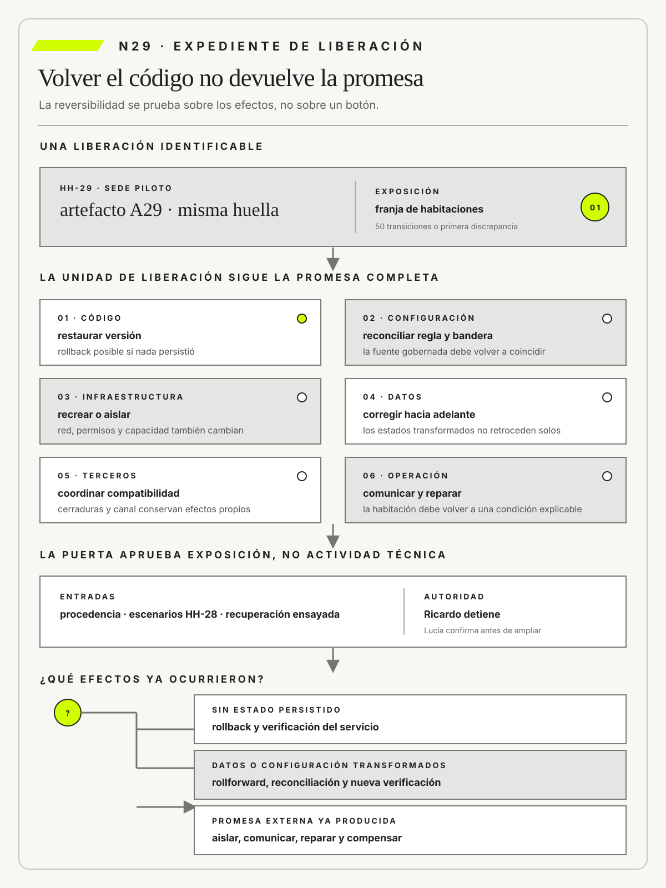

Kent Beck
Extreme Programming Explained, Second Edition. Addison-Wesley · 2004
Vincula cambios pequeños, pruebas frecuentes y diseño revisable con una reducción concreta del riesgo de liberar.

Una liberación exige evidencia común de versión, exposición, recuperación y autoridad.
Gobernar integración, despliegue, infraestructura, aprobación y recuperación
Ruta priorizada: 1 h 20 min a 1 h 40 min. Núcleo de lectura: 60 a 75 min; preparación: 20 a 25 min. Las extensiones agregan 30 a 45 min y profundizan el recorrido.

Nota. SIN NUM. identifica aparatos de orientación y referencia.
Seis referentes y las obras principales utilizadas para construir N29.
Vincula cambios pequeños, pruebas frecuentes y diseño revisable con una reducción concreta del riesgo de liberar.

Convierte refactorización, integración y evolución arquitectónica en decisiones que pueden revisarse sin congelar el sistema.

Explica las condiciones organizacionales que permiten informar fallas, detener una liberación y aprender sin ocultar evidencia.

Sitúa disponibilidad, consistencia y evolución dentro de compromisos operativos explícitos.

Integra seguridad y trazabilidad en el ciclo de desarrollo mediante prácticas verificables del SSDF.

Traduce riesgo y seguridad de software en recomendaciones aplicables a desarrollo, liberación y respuesta.
N29 no resume estas fuentes ni las convierte en receta. Las pone en tensión para construir juicio profesional.
¿Cómo liberar cambios con rapidez sin perder control cuando código, configuración, infraestructura, datos y decisiones deben avanzar juntos y poder recuperarse?

Revertir código no repara por sí solo los estados, dependencias y expectativas que ya cambiaron.
Una empresa de pagos libera una nueva versión del servicio que calcula comisiones y confirma transferencias. La cadena automatizada termina sin errores, las pruebas funcionales están aprobadas y el cambio se habilita primero para una fracción de operaciones. Veinte minutos después, Atención recibe reclamos por movimientos duplicados. El equipo activa el rollback y restaura la versión anterior del código. Los reclamos continúan.
La explicación inicial atribuye el incidente a un defecto de la versión nueva. Sin embargo, la base ya contiene transacciones transformadas por una migración, la cola conserva mensajes producidos con el esquema nuevo y un tercero reintenta solicitudes cuyo resultado no recibió. Volver el binario no devuelve datos, configuración, infraestructura ni actores al estado previo. La reversión técnica fue real y la recuperación del servicio, incompleta.
El episodio permite distinguir despliegue, liberación y recuperación. Desplegar coloca un artefacto en un ambiente. Liberar expone una capacidad a una población bajo una decisión. Recuperar restituye una promesa o construye una alternativa segura cuando el estado anterior ya no puede reconstruirse. Confundir esas operaciones produce puertas que aprueban código y dejan sin gobierno las consecuencias.
La investigación reconstruye qué commit originó el artefacto, qué dependencias contenía, quién aprobó la configuración, qué migración cambió datos, qué población quedó expuesta y qué señal motivó la detención. Git conserva versiones y evidencia de cambio; una plataforma colaborativa como GitHub organiza revisiones, automatizaciones y permisos. Ninguna herramienta, por sí sola, prueba que el artefacto desplegado corresponde al aprobado ni que la operación puede recuperarse.
Surgen dos estrategias rivales. La primera propone una reversión total: detener, restaurar una copia y reprocesar. Puede ser adecuada si el punto de restauración es confiable, pero pierde operaciones legítimas posteriores. La segunda avanza con una corrección hacia adelante que identifica duplicados, congela nuevas transferencias y reconcilia efectos. Conserva actividad reciente, aunque exige mayor evidencia y una autoridad clara para aceptar estados transitorios.
La decisión combina ambas según consecuencia. Se detiene la exposición nueva, se conserva el artefacto para análisis y se ejecuta una reparación idempotente sobre el conjunto afectado. Finanzas valida restituciones; Operaciones define prioridad; Tecnología reconstruye procedencia; Riesgo autoriza reapertura. La organización no mide velocidad por cantidad de despliegues, sino por capacidad de cambiar sin perder trazabilidad, detener sin improvisar y reparar sin borrar lo ocurrido.
La revisión muestra además un problema de diseño organizacional. La aprobación estaba concentrada en el equipo que construyó la solución, mientras quienes respondían ante clientes sólo podían reaccionar después del daño. La nueva puerta de decisión incorpora escenarios de calidad, alcance de exposición, señales posteriores, autoridad de detención y planes para código, datos, configuración, terceros y operación. Cada control debe justificar qué incertidumbre reduce.
N29 recibe de N28 reclamos de calidad y los convierte en decisiones de liberación. El objetivo no es agregar una ceremonia ni frenar integración continua, sino colocar evidencia y autoridad en los puntos donde una decisión aumenta compromiso. DevOps aparece como capacidad sociotécnica de entrega y aprendizaje, no como nombre de un equipo ni como sinónimo de una cadena automatizada.
HH-29 parte de la corrección aprobada en HH-28. Federico Müller despliega el nuevo estado asignable en una sede piloto y la cadena automatizada termina en verde. Minutos después, Lucía Ferreyra informa que algunas habitaciones quedan bloqueadas. El código puede volver a la versión anterior, pero una migración ya transformó estados en el PMS y una regla de cerraduras conserva la nueva interpretación. El botón de rollback restaura un componente, no la promesa.

La reconstrucción reúne hash del artefacto, configuración, versión de esquema, orden de migración, autorización, población expuesta y señales posteriores. Mariela Benítez demuestra que su planilla siguió enviando liberada; Ricardo Sosa identifica el procedimiento manual activado durante la transición; Camila Duarte confirma que la sede piloto continuó vendiendo. La falla no pertenece a un único equipo y tampoco puede repararse sólo desde infraestructura.
El expediente HH-29 separa despliegue de liberación. La decisión es ejecutar una exposición gradual controlada sobre una franja de habitaciones, congelar cambios comerciales durante la ventana y preparar tanto rollback de código como rollforward de datos. Este último término designa una corrección hacia adelante cuando volver no restituye estados ya transformados.
Elena Acosta asigna a Ricardo la autoridad para detener la exposición; Federico conserva procedencia y evidencias; Lucía confirma el resultado observable antes de ampliar. La aprobación se apoya en escenarios de HH-28, no en el color de la cadena automatizada.
La liberación sólo avanzará si el hotel puede recuperar una habitación sin conocimiento privado y reconstruir qué versión rigió para cada ingreso. Se revisará después de cincuenta transiciones o ante la primera discrepancia entre PMS y cerradura. HH-30 observará el servicio ya operativo y comprobará si las señales anticipan degradación antes de que la espera en el mostrador se vuelva una normalidad invisible.
Liberar un cambio es gobernable cuando el artefacto, la configuración, la infraestructura, los datos, la autoridad y la población expuesta avanzan como una unidad que puede reconstruirse. La integración continua y la automatización reducen variaciones, pero no deciden qué se expone, a quién ni con qué riesgo. Volver el código no recupera el servicio si los datos, los terceros o la operación ya cambiaron. La capacidad profesional aparece cuando la organización puede volver o reparar de forma ensayada, conservar lo ocurrido y aprender sin trasladar el riesgo en silencio.
En términos prácticos, el mecanismo consiste en conectar cambio de código, integración, infraestructura, autorización, despliegue y recuperación mediante evidencia y responsabilidades observables. Cada parte cumple una función distinta y evita que una herramienta o una métrica reemplace al razonamiento que debería sostenerla. Lo importante es poder explicar por qué esa secuencia resulta adecuada para este problema.
Puede verse en una situación cotidiana: CI puede verificar cada cambio y CD dejarlo listo, pero producción sólo se actualiza cuando riesgos, datos y operación cumplen la puerta acordada. La escena comienza simple y gana complejidad cuando aparecen población, tiempo, dependencias y consecuencias. Esa progresión permite aprender sin saltar directamente a una solución total.
Un contraejemplo marca la frontera de la tesis: confundir automatización del pipeline con gobierno completo o convertir toda aprobación en espera manual sin criterio. La misma práctica deja de ser defendible cuando ya no produce evidencia, desplaza daño o impide revisar el compromiso. Nombrar el límite es parte de comprender, no una nota marginal.
Hotel Horizonte vuelve concreta la distinción: Federico despliega una regla, Ricardo protege continuidad y Elena acepta expansión; rollback técnico no basta si ya hubo huéspedes afectados. Las voces del caso no ilustran una respuesta predeterminada; muestran cómo una decisión cambia según quién sostiene la promesa, quién opera y quién recibe las consecuencias.
Para la práctica profesional, esto implica hacer cada cambio trazable y recuperable en lo técnico y operativo; N30 observará señales e incidentes. El documento ofrece un paso acumulativo del recorrido, pero conserva abierta la evidencia que podría obligar a corregirlo en el núcleo siguiente.
La liberación sólo es reversible o reparable cuando artefacto, configuración, infraestructura, datos, terceros y operación conservan identidad, exposición, autoridad y una salida ensayada.

Los escenarios de N28 establecieron qué comportamiento y qué riesgo residual podrían aceptarse. N29 los convierte en condiciones de liberación y los vincula con un artefacto, una configuración, una población expuesta y una autoridad capaz de detener el cambio.
La evidencia deja de respaldar una calidad abstracta y pasa a gobernar una secuencia concreta de integración, despliegue, exposición y recuperación. Una vez que la versión opera, N30 deberá observar si la promesa real coincide con lo aprobado y qué aprendizaje produce la diferencia.
Humble, J. y Farley, D. organizan artefactos liberables, automatización y recuperación.
Forsgren, N., Humble, J. y Kim, G. vinculan cambios pequeños, automatización y recuperación con resultados operativos que permiten gobernar la liberación.
DeBellis, D. et al. relacionan desempeño de entrega con estabilidad y aprendizaje.
Scarfone, K., Souppaya, M. y Dodson, D. integran prácticas de desarrollo seguro al ciclo de vida en el Secure Software Development Framework de NIST.
Boyens, J. M., Smith, A., Bartol, N., Winkler, K., Holbrook, A. y Fallon, M. integran riesgo de cadena de suministro durante el ciclo de vida.
Chandramouli, R., Kautz, F. y Torres-Arias, S. integran seguridad de cadena de suministro en cadenas automatizadas de integración y entrega.
SLSA define niveles y atestaciones de procedencia de software.
CISA desplaza seguridad hacia decisiones de producto y proveedor.
ISO/IEC estructura un sistema de gestión de seguridad de la información.
ISO/IEC establece requisitos de gestión para sostener servicios.
OpenGitOps formula operación declarativa, versionada y reconciliada.
Kim, G., Humble, J., Debois, P. y Willis, J. integran flujo, retroalimentación y aprendizaje organizacional.
Beck, K. y Fowler, M. muestran cómo cambios pequeños, pruebas y refactorización reducen el costo de revisar una decisión; Edmondson, A. C. explica por qué una recuperación segura necesita voz y aprendizaje; Vogels, W. aporta una lectura operacional de servicios distribuidos que deben seguir cambiando sin perder responsabilidad.
La integración continua mantiene cambios pequeños combinados y verificados con frecuencia sobre una base compartida. No es ejecutar una herramienta ni fusionar sin disciplina. Su valor está en reducir la distancia entre versiones y volver visibles las incompatibilidades antes de que se acumulen.
En HH-29, un cambio de reserva se integra junto con pruebas de contrato, migración y configuración. Cada resultado conserva revisión de código, artefacto y evidencia. Frecuencia, tiempo de reparación y fallas detectadas antes de desplegar permiten evaluar si la práctica reduce riesgo o sólo acelera actividad.
Una base verde puede omitir escenarios no automatizados y contratos con la operación. El equipo incorpora pruebas adversas según exposición y registra excepciones conocidas. Integrar no autoriza liberar: prepara evidencia para una decisión posterior con población y riesgo definidos.
«La cadena terminó en verde», dijo Federico. «La habitación sigue bloqueada», respondió Lucía. Ricardo preguntó: «¿Podemos recuperar el servicio o sólo volver el código?». Elena concluyó: «No ampliamos hasta poder explicar y ensayar la recuperación completa». La conversación separa el resultado de una herramienta de la decisión que protege el servicio.
El tamaño del cambio importa porque condiciona diagnóstico y recuperación. Una integración que reúne semanas de trabajo puede pasar todas las pruebas y todavía contener múltiples explicaciones posibles para una falla. HH-29 limita cada unidad a una hipótesis reconocible y conserva qué comportamiento debería cambiar. Si el resultado no aparece, Federico puede localizar la diferencia sin comparar una transformación completa.
La frecuencia no es un objetivo aislado: vale cuando reduce inventario pendiente, acorta retroalimentación y mantiene capacidad de detenerse. Un equipo que integra a menudo pero posterga las pruebas críticas sólo acelera la acumulación de riesgo invisible.
La base compartida necesita una política de reparación inmediata. Cuando una verificación falla, el equipo corrige o retira el cambio antes de agregar otro, salvo una excepción fundada. Esa disciplina impide que el estado rojo se normalice y que cada integrante desarrolle contra una versión distinta. Las fallas intermitentes se tratan como pérdida de evidencia, no como ruido tolerable, porque vuelven incierta la puerta posterior.
El registro distingue una falla del producto, del ambiente y de la propia prueba para que la velocidad no se obtenga desactivando el mecanismo que debía producir confianza.
Git es un sistema distribuido de control de versiones. La exposición de Chacon y Straub en Pro Git permite comprender cómo sus objetos y relaciones conservan una historia que puede reconstruirse y compararse. Una rama separa temporalmente una línea de trabajo; una fusión integra historias; una etiqueta identifica un punto significativo. Estas capacidades no garantizan por sí solas revisión, calidad ni aprobación. Una historia completa puede documentar con precisión una decisión equivocada.
GitHub agrega una plataforma de colaboración alrededor del repositorio. Las solicitudes de cambio reúnen diferencia, conversación, verificaciones y decisión de integración. Las reglas de protección pueden exigir revisiones, controles automáticos y restricciones sobre la rama principal. Las incidencias relacionan trabajo pendiente con evidencia y responsabilidad. Las versiones publicadas agrupan artefactos. Cada función necesita una política: quién puede proponer, quién revisa qué aspecto, qué control bloquea y qué excepción existe ante una urgencia.
HH-29 utiliza una rama breve para modificar el contrato de asignación. La solicitud de cambio declara el problema, la hipótesis, la población afectada y la prueba esperada. La revisión técnica examina implementación y seguridad; Lucía verifica que el comportamiento represente la operación; la autoridad de liberación evalúa exposición y recuperación. Dos aprobaciones idénticas no agregan independencia. La revisión produce valor cuando cada participante puede observar una dimensión relevante y formular una objeción que modifique la decisión.
Los controles de rama protegen una frontera, pero no deben confundir integración con liberación. El cambio puede ingresar a la base compartida y permanecer deshabilitado mientras se completa una prueba o se limita una cohorte. A la inversa, una modificación de configuración fuera del repositorio puede alterar producción sin que la rama principal cambie. El expediente conecta commit, artefacto, configuración, aprobación, población y resultado observado.
La historia debe ser interpretable. Mensajes genéricos, fusiones masivas y credenciales compartidas reducen su valor probatorio. Sin embargo, reescribir la historia para que parezca perfecta puede borrar decisiones que una auditoría necesita comprender. El equipo acuerda una convención mínima, conserva autores y revisores, y corrige errores mediante nuevos cambios cuando la trazabilidad importa. Git aporta procedencia técnica; la autoridad y el sentido continúan siendo institucionales.
DevOps no designa un cargo, una herramienta ni una etapa posterior al desarrollo. Nombra una capacidad organizacional que acerca construcción y operación mediante flujo, retroalimentación, automatización responsable y aprendizaje compartido. Su resultado no es desplegar más veces, sino poder cambiar una capacidad con evidencia, observar consecuencias y reparar sin transferir el costo a quienes sostienen el servicio.
En Hotel Horizonte, Federico no termina cuando la aplicación compila. Necesita conocer la cola que verá Lucía, la contingencia que ejecutará Mariela y la promesa que Camila mantiene abierta. Operaciones tampoco recibe pasivamente un artefacto. Participa en criterios, pruebas, observabilidad y recuperación. Esta relación reduce el tiempo entre una decisión de diseño y la evidencia de su efecto, sin borrar funciones ni concentrar autoridad en una sola persona.
La automatización elimina espera repetitiva cuando conserva controles y explicaciones. Una cadena puede construir, probar, firmar y promover el mismo artefacto; la decisión de ampliar población depende todavía de riesgo, señales y capacidad de respuesta. Una práctica manual puede ser defendible para un cambio infrecuente si deja evidencia y se ensaya. La pregunta no es cuánto se automatizó, sino qué incertidumbre reduce y qué nueva dependencia introduce.
El trabajo se observa de punta a punta. Tiempo hasta cambio, frecuencia, fallas, recuperación y retrabajo permiten estudiar el sistema, pero no sustituyen outcomes de negocio, accesibilidad, seguridad ni carga humana. Una mejora local que acelera despliegues y aumenta reparaciones nocturnas no representa alto desempeño. N30 desarrollará cómo formular señales y utilizar las métricas DORA como preguntas diagnósticas dentro de ese conjunto.
Un artefacto liberable es una unidad identificada, inmutable y trazable que puede promoverse entre ambientes. No es cualquier compilación ni una copia reconstruida para producción. Debe vincular versión, dependencias, procedencia, configuración requerida y evidencia de prueba.
HH-29 promueve la misma imagen que atravesó las verificaciones, sin recompilarla en cada ambiente. Firmas y atestaciones permiten rastrear origen y transformación. El expediente detecta si un cambio de biblioteca, secreto o parámetro altera lo que realmente se pone en operación.
La trazabilidad no garantiza adecuación al uso. Un artefacto auténtico puede implementar una decisión equivocada. Por eso la liberación conecta identidad técnica con contrato, riesgo, autorización y capacidad de recuperación, y rechaza cualquier unidad cuya historia no pueda reconstruirse.
La inmutabilidad evita que una misma etiqueta represente contenidos diferentes. El artefacto recibe un identificador por contenido y se promueve sin reconstrucción; las notas de liberación y las evidencias apuntan a esa identidad. Si una dependencia externa se resuelve durante el despliegue, el resultado ya no es el que atravesó las pruebas. HH-29 incluye bibliotecas, imágenes base y herramientas relevantes en la procedencia. La decisión puede aceptar una dependencia dinámica, pero debe declararla y observarla, no presentarla como unidad estable.
Promover el mismo artefacto no significa producir el mismo sistema. Configuración, datos y permisos completan su comportamiento. El expediente vincula esas condiciones sin incorporarlas indiscriminadamente en la unidad, porque algunas contienen secretos o cambian por ambiente. Una lista de materiales permite investigar exposición; una firma permite verificar origen; ninguna reemplaza la prueba de la promesa. El artefacto liberable es el ancla técnica de una decisión sociotécnica más amplia.
Ambiente y configuración reúnen condiciones externas que determinan cómo se comporta una versión. No son detalles posteriores al código. Redes, secretos, permisos, datos, capacidades y reglas pueden convertir el mismo artefacto en sistemas materialmente distintos.
En Hotel Horizonte, reglas de cerradura y permisos se controlan junto con la aplicación. HH-29 compara inventarios, deriva y comportamiento en condiciones reales. La prueba incluye configuración faltante, versión antigua y privilegio indebido para revelar dependencias que el ambiente de desarrollo no reproduce.
La producción nunca puede copiarse por completo en prueba. El objetivo es declarar diferencias relevantes y reducir sorpresa, no prometer identidad. Cada configuración crítica conserva responsable, versión y condición de cambio, y cualquier ajuste de emergencia se reconcilia después con la fuente gobernada.
Las diferencias se clasifican por el mecanismo que podrían alterar. Volumen y distribución de datos afectan desempeño; permisos cambian rutas posibles; versiones de terceros modifican contratos; relojes y redes inciden sobre orden y demora. El equipo no necesita reproducir todo, pero sí representar aquello que sostiene el reclamo de liberación. HH-29 crea datos sintéticos para excepciones y ejecuta una prueba limitada con condiciones reales cuando la simulación no alcanza. Esa decisión conserva alcance, autorización y salida.
La configuración tiene ciclo de vida propio. Un parámetro temporal puede permanecer años si no posee fecha de retiro; una bandera puede combinarse con otra y producir un estado jamás probado. El inventario registra valor, propósito, responsable, población y compatibilidad. La deriva se detecta comparando la fuente gobernada con lo observado, sin sobrescribir automáticamente una modificación cuyo origen todavía se investiga. Después de una emergencia, la operación real se reconcilia con el código o la excepción queda documentada y limitada.
La infraestructura como código expresa recursos y políticas mediante definiciones versionadas y revisables. No significa automatizar cualquier cambio sin control. Permite comparar, reproducir y recuperar condiciones que antes dependían de acciones manuales irreconstruibles.
HH-29 registra red, permisos y capacidad que sostienen el ingreso. Los planes de cambio se revisan antes de aplicar y el estado observado se contrasta después. Una reconstrucción controlada prueba mejor la definición que la mera existencia de archivos declarativos.
El estado externo y las modificaciones directas producen deriva. La disciplina incluye detección, excepción de emergencia y retorno a una fuente coherente. La automatización se detiene cuando la diferencia excede el alcance autorizado o amenaza datos y continuidad.
Una definición declarativa debe poder revisarse antes de modificar recursos. El plan muestra qué se crea, cambia o destruye y permite relacionar cada diferencia con la intención aprobada. Controles automáticos bloquean permisos amplios, exposición pública o eliminación irreversible, pero no deciden si la capacidad resultante sirve al hotel. La revisión incluye el efecto sobre operación y recuperación. Una regla formalmente válida puede aislar el servicio del canal que necesita usarlo.
La recreación se ensaya en un entorno vacío con dependencias y datos controlados. Si el resultado exige pasos manuales, se incorporan a la definición o se registran como excepción con plazo. Los secretos no se almacenan en texto, pero su provisión y rotación sí forman parte del procedimiento. HH-29 mide tiempo y fallas de reconstrucción, porque una infraestructura versionada que nadie puede levantar durante un incidente no constituye una capacidad de recuperación.
Una puerta de decisión vincula evidencia y autoridad con el compromiso que puede asumirse. No es una reunión fija ni una firma ceremonial. Su exigencia aumenta según exposición, irreversibilidad, novedad y daño posible.


HH-29 habilita una población limitada sólo cuando pasan los escenarios críticos y existe recuperación ensayada. Los criterios se fijan antes de ver el resultado; la autoridad puede aprobar, limitar o rechazar y debe dejar razones. Una excepción conserva duración y responsable.
Demasiadas puertas pueden dispersar responsabilidad y demorar reparación. El diseño separa controles que previenen daño de burocracia que sólo registra actividad. La eficacia se revisa con decisiones reales: qué falla detectó, qué riesgo aceptó y qué aprendizaje modificó el umbral.
Una puerta declara entradas, autoridad, resultados posibles y evidencia posterior. No exige que toda entrada sea favorable: una excepción conocida puede aceptarse si su consecuencia, duración y reparación están delimitadas. El resultado puede ser avanzar, avanzar con alcance reducido, solicitar otra prueba o rechazar. Esta variedad evita que la reunión funcione como aprobación binaria y que las dudas se oculten para cumplir el calendario. Las razones se registran antes de observar el desempeño productivo.
Los controles automáticos y humanos cumplen funciones distintas. Una firma puede verificar procedencia de manera consistente; una autoridad debe juzgar si el riesgo residual es compatible con la promesa. Automatizar criterios estables libera atención, pero una excepción no se aprueba por marcar un campo. HH-29 revisa periódicamente qué controles detectaron fallas y cuáles nunca modificaron una decisión. Los segundos se eliminan o rediseñan para que la puerta conserve foco y responsabilidad.
La aprobación basada en riesgo ajusta controles y autoridad al daño y a la reversibilidad del cambio. No equivale a aprobar automáticamente cambios pequeños ni a exigir un comité para cada versión. Clasifica alcance, dependencia, datos, población y capacidad de recuperación.
En HH-29, un ajuste de texto puede fluir con controles automáticos; una migración de estados requiere evidencia y revisión adicionales. La clasificación se registra antes de ejecutar y se contrasta con fallas posteriores. Una historia de incidentes puede elevar exigencia aunque el cambio parezca familiar.
Una taxonomía rígida puede ser manipulada o quedar obsoleta. Por eso existe una vía para escalar dudas y revisar categorías. El objetivo es concentrar atención experta donde reduce exposición, sin convertir velocidad en ausencia de juicio.
La clasificación considera el sistema afectado y no sólo las líneas de código. Un cambio pequeño en una regla de autorización puede tener mayor consecuencia que una reestructuración extensa sin efecto visible. La ficha pregunta por datos, población, irreversibilidad, terceros, novedad y capacidad de detección. Una combinación de factores puede elevar la clase aunque cada uno parezca moderado. El equipo conserva ejemplos de decisiones anteriores para calibrar sin convertirlos en precedentes automáticos.
La aprobación se revisa después de la liberación. Si una categoría considerada baja produjo repetidamente reparaciones costosas, el modelo de riesgo necesita cambiar. Si un control adicional nunca aporta evidencia, puede retirarse. Esta retroalimentación evita que el proceso acumule capas tras cada incidente. El objetivo no es cero cambios fallidos, sino exposición proporcionada, detección temprana y capacidad de reparar sin ocultar a quién afectó la decisión.
La relación entre velocidad y control no se resuelve contando aprobaciones. Forsgren, Humble y Kim muestran que cambios pequeños y recuperación rápida pueden coexistir con alto desempeño de entrega, mientras el SSDF de Scarfone, Souppaya y Dodson exige integrar prácticas de seguridad al ciclo de desarrollo. Ambas perspectivas convergen en reducir lotes y producir evidencia temprana, pero responden preguntas distintas.
La primera observa resultados de entrega y estabilidad; la segunda prescribe prácticas para tratar riesgo de software. HH-29 no usa una correlación de DORA como permiso automático ni convierte una práctica del SSDF en garantía de servicio. La puerta combina evidencia del cambio concreto con el daño que el hotel está dispuesto a aceptar.
Una matriz breve vuelve ejecutable esa combinación. El eje de exposición distingue una sede, varias sedes y toda la red. El eje de reversibilidad separa efectos que vuelven con el artefacto, datos que requieren conversión y promesas externas que sólo admiten reparación. El eje de detectabilidad estima si el turno reconoce el daño antes de que alcance a otra persona.
Un cambio limitado, reversible y detectable puede avanzar con controles automáticos y revisión posterior. Una migración transversal, difícil de detectar y con efectos sobre accesibilidad necesita prueba dirigida, aprobación previa y una cohorte menor. La matriz no calcula una verdad universal: obliga a justificar por qué determinada evidencia alcanza para ese compromiso.
La segregación de funciones distribuye capacidades sensibles para reducir abuso y error no detectado. No exige que cada acción atraviese muchas personas. Combina permisos mínimos, revisión independiente, trazabilidad y controles compensatorios.
Quien desarrolla HH-29 no debería poder modificar producción y borrar evidencia sin rastro. Los registros muestran quién propuso, aprobó, ejecutó y verificó. Un ejercicio de acceso indebido comprueba que la separación existe en el sistema y no sólo en una política.
Equipos pequeños necesitan soluciones proporcionales que no bloqueen respuesta. Puede usarse aprobación posterior, credenciales temporales o revisión por pares según daño y urgencia. Las excepciones se limitan, observan y cierran para evitar que una contingencia se vuelva la práctica normal.
La separación debe impedir una combinación peligrosa, no producir independencia ficticia. Dos aprobaciones de personas que dependen del mismo objetivo o no acceden a la evidencia pueden equivaler a una sola. HH-29 asigna a quien propone el cambio la explicación técnica, a Operaciones la validación de capacidad y a una autoridad la aceptación del riesgo. Cada rol puede formular objeciones y dejar constancia del desacuerdo. La identidad de quien ejecuta se conserva para investigar, no para trasladar toda responsabilidad individual.
Durante una urgencia se aplica el control compensatorio más cercano al riesgo: acceso de duración limitada, registro reforzado, observación en tiempo real y revisión posterior obligatoria. La excepción no habilita borrar evidencias ni omitir conciliación. Cuando finaliza, se revocan permisos y se verifica el estado. Si las urgencias se repiten, el problema es de diseño del proceso o de capacidad, y debe corregirse en lugar de institucionalizar privilegios permanentes.
El despliegue progresivo amplía exposición por etapas mientras observa evidencia y conserva una salida. No es liberar lentamente sin criterio. Utiliza cohortes, banderas de funcionalidad, canarios y umbrales definidos de antemano.
El nuevo ingreso comienza en un turno y una categoría controlados. HH-29 compara señales técnicas y de negocio con una población no expuesta, y detiene ante estados indeterminados o reparación excesiva. La selección inicial no debe excluir precisamente a quienes concentran el riesgo.
Una muestra pequeña puede no representar picos ni casos críticos. Cada expansión incorpora una hipótesis nueva y revisa el resultado anterior. El cierre ocurre cuando la evidencia cubre el alcance pretendido, no cuando el porcentaje de tráfico alcanza por inercia un valor planificado.
La cohorte inicial se elige por capacidad de aprender con exposición limitada, no por conveniencia para obtener un resultado favorable. Debe incluir el mecanismo incierto sin concentrar una población vulnerable como material de prueba. En HH-29 se selecciona una sede con soporte disponible y casos representativos, se excluyen temporalmente acciones irreversibles y se conserva una ruta alternativa. La comparación utiliza períodos y condiciones equivalentes para no atribuir al cambio una mejora producida por menor demanda.
Los umbrales incluyen señales técnicas, operativas y humanas. Una tasa baja de errores no autoriza avanzar si aparece una reserva inaccesible o si Recepción necesita una reparación no prevista. Cada expansión tiene duración mínima para observar el patrón y máxima para evitar una fase piloto indefinida. Si la evidencia queda inconclusa, el equipo mantiene o reduce exposición; no avanza para cumplir una fecha. La progresión es una secuencia de decisiones, no un temporizador.
Rollback restaura una versión o estado anterior cuando la reversión es segura y completa. No es un botón universal ni sinónimo de recuperación. Debe abarcar código, configuración, infraestructura, contratos y datos afectados.
HH-29 ensaya la vuelta a una versión compatible y mide el tiempo hasta recuperar la promesa. El ejercicio verifica qué estados ya cambiaron y cuáles requieren reconciliación. Una respuesta técnica exitosa no basta si el huésped conserva una reserva duplicada o inaccesible.
Migraciones destructivas y efectos externos pueden impedir volver. La puerta de decisión debe conocer esa irreversibilidad antes de liberar. Cuando rollback no es confiable, se limita exposición y se prepara reparación hacia adelante con autoridad y evidencia equivalentes.
La unidad de reversión se define antes del cambio. Volver la aplicación sin restaurar la definición de estado puede hacer que la versión anterior interprete datos nuevos de manera errónea. El plan enumera compatibilidad hacia atrás, copias, secuencia y punto después del cual una reversión deja de ser segura. Las copias se prueban restaurando una muestra; existir no demuestra que puedan usarse dentro del tiempo tolerable. También se considera qué comunicaciones y decisiones ya produjeron consecuencias que ningún respaldo puede deshacer.
El ensayo mide la promesa recuperada y no sólo el tiempo de ejecución del mecanismo. Federico puede completar la reversión en minutos mientras Lucía continúa reconciliando reservas durante horas. HH-29 registra ambos tiempos, estados pendientes y personas afectadas. Si la vuelta aumenta la incertidumbre, la autoridad elige reparación hacia adelante. Llamar rollback a una corrección parcial crea una expectativa peligrosa y puede demorar la acción adecuada.
La compatibilidad de datos necesita una secuencia propia. Antes de reemplazar una representación, el hotel puede ampliar el esquema con un campo nuevo, escribir temporalmente en ambas formas y comprobar que versiones nuevas y anteriores leen un estado coherente. Sólo después migra registros históricos y retira la forma vieja.
Esta estrategia, conocida como expandir y contraer, no vuelve reversible cualquier cambio, pero desplaza el punto de irreversibilidad hasta que existe evidencia productiva. Si la escritura doble diverge, el despliegue se detiene y los registros se reconcilian antes de continuar. La decisión queda asociada a una condición observable y no a la esperanza de que la migración termine bien.
Un ensayo debe recorrer también el límite temporal. Antes de transformar datos, rollback puede bastar; durante la convivencia de versiones quizá sea necesario aislar una cohorte; después de emitir mensajes o retirar el esquema anterior sólo queda rollforward más reparación. HH-29 representa esos puntos en el árbol de recuperación y asigna una autoridad a cada transición.
Esta práctica profundiza la propuesta de entrega continua de Humble y Farley: automatizar el recorrido reduce demora, pero la recuperación defendible depende de conocer qué estado todavía admite vuelta. El resultado esperado no es regresar siempre, sino elegir sin improvisación la rama que conserva mejor la promesa.
Rollforward y reparación corrigen hacia adelante cuando volver no restituye la promesa. No significan improvisar bajo presión. Preparan cambios compensatorios, reconciliación, comunicación y una vía manual segura.
En Hotel Horizonte, estados ya migrados necesitan reparación mientras el servicio continúa. HH-29 define qué se corrige automáticamente, qué revisa Operaciones y cómo se verifica el resultado. Las guías operativas se ensayan con personas de turno para reducir dependencia de héroes.
Avanzar con diagnóstico incierto puede ampliar el daño. La decisión establece umbrales, población y autoridad para detener. Cada corrección conserva procedencia y se integra después a la versión gobernada, de modo que la emergencia no cree una rama operacional invisible.
La reparación hacia adelante se prepara con operaciones pequeñas, observables e idempotentes cuando es posible. Un proceso identifica estados afectados, propone corrección y separa casos ambiguos para revisión. La organización no ejecuta una transformación masiva sin estimar alcance ni conservar una copia verificable. Lucía valida una muestra desde la experiencia operacional y Federico compara antes y después. Si la corrección introduce otra interpretación, el equipo detiene y vuelve a formular el contrato.
La comunicación forma parte de la reparación. Quien recibió una promesa falsa necesita conocer el estado actual, la alternativa y la vía de reclamo; no basta con corregir silenciosamente la base. El expediente registra daños, compensaciones y trabajo adicional. Después, la solución de emergencia se incorpora al flujo ordinario de cambios con pruebas y revisión. Esta reconciliación evita que el sistema real dependa de una secuencia manual que la siguiente liberación desconoce.
La procedencia y la cadena de suministro permiten conocer origen, transformación y controles de componentes y artefactos. No se resuelven con un inventario estático. Deben conectar fuente, dependencias, entorno de construcción, firma y despliegue efectivo.
HH-29 rastrea el artefacto del PMS hasta su código y plataforma de compilación. SBOM, firmas y atestaciones permiten investigar cambios y vulnerabilidades. La verificación independiente comprueba que la evidencia pertenece al artefacto liberado y no a otra versión.
Una procedencia válida no demuestra ausencia de fallas ni legitimidad del uso. Sirve para limitar incertidumbre, responder a incidentes y decidir qué retirar. El gobierno incluye componentes de terceros, accesos de mantenimiento y cambios urgentes que suelen quedar fuera de la cadena automatizada ordinaria.
La cadena se verifica desde la fuente hasta el artefacto y desde el artefacto en operación hasta la evidencia que lo identifica. El primer recorrido muestra quién produjo y transformó; el segundo confirma qué unidad recibió una población concreta. Una firma sin vínculo con el despliegue puede autenticar un archivo que nunca fue usado. HH-29 registra identificador, entorno, configuración y período de exposición para reconstruir cada ingreso. Esa trazabilidad permite acotar una vulnerabilidad sin retirar versiones no afectadas.
La lista de materiales aporta componentes y relaciones, pero necesita actualización y contexto. Una dependencia presente puede no ejecutarse; otra descargada en tiempo de ejecución puede faltar. El equipo combina inventario, escaneo, atestaciones y observación. Cuando aparece un aviso de seguridad, evalúa explotabilidad, exposición y alternativas, no sólo severidad publicada. La decisión de continuar, limitar o retirar queda vinculada con la evidencia disponible y una fecha de revisión.
SBOM, firma y atestación responden preguntas complementarias. La lista de materiales declara qué componentes se conocen; la firma permite comprobar integridad e identidad bajo una cadena de confianza; la atestación registra afirmaciones verificables sobre cómo se produjo el artefacto. Ninguna prueba por sí sola que el componente fue adecuado, que la plataforma estuvo libre de compromiso o que la configuración desplegada coincide con la aprobada.
SLSA 1.2 organiza garantías crecientes sobre fuente y construcción, mientras NIST SP 800-204D sitúa esas garantías dentro de una cadena DevSecOps que también debe proteger credenciales, ejecutores y promociones. HH-29 usa ambos marcos sin tratarlos como certificaciones equivalentes.
Ante una biblioteca vulnerable, la decisión recorre una cadena concreta. Primero identifica qué artefactos contienen la versión mediante la SBOM; luego verifica con procedencia qué constructor y fuente los produjeron; después observa si la función afectada se ejecuta en la configuración expuesta. Si existe explotación plausible, limita población o retira; si no puede determinarla, conserva esa incertidumbre y fija un plazo corto de revisión.
Una severidad publicada no sustituye la evaluación local, pero tampoco puede descartarse porque todavía no hubo incidentes. Esta distinción convierte la procedencia en capacidad de respuesta y evita usar un inventario completo como argumento de seguridad total.
El cierre de liberación confirma que el cambio quedó operable, observado, documentado y transferido. No coincide con terminar la cadena automatizada ni con alcanzar todo el tráfico. Revisa resultados, excepciones, responsabilidad, deuda y próximos umbrales.
Recepción confirma que puede operar y conoce la contingencia antes de retirar soporte reforzado. HH-29 compara evidencia de producción con los criterios de la puerta y registra cualquier desviación. El cierre distingue trabajo pendiente aceptado de una obligación que impide sostener la promesa.
Cerrar demasiado pronto borra señales; sostener un modo especial indefinido crea dependencia. La decisión fija fecha y condiciones para volver a revisar. Una liberación termina cuando la organización puede gobernar la versión sin ocultar las capacidades temporales que todavía la sostienen.
El cierre distingue estabilidad inicial de sostenibilidad. Durante el soporte reforzado puede haber personas adicionales, monitoreo manual o una congelación comercial que no continuarán. Antes de retirarlos, HH-29 observa el servicio bajo condiciones normales y verifica que el turno posee permisos, documentación y criterio. Si el resultado depende de esas medidas, se incorporan como capacidad permanente o se limita el alcance. No se elimina el apoyo para cumplir una fecha.
Las obligaciones pendientes se clasifican por efecto. Una mejora conveniente puede quedar en la cartera; una deuda que impide detectar o reparar bloquea el cierre. Cada excepción conserva responsable y señal, pero la suma también se evalúa porque varias deudas pequeñas pueden formar una fragilidad significativa. El aprendizaje de la liberación actualiza puertas, escenarios y procedimientos para que la próxima decisión no repita los mismos supuestos.
HH-29 documenta una liberación como decisión reversible sobre software, configuración, datos e infraestructura. Su unidad no es una cadena automatizada exitosa, sino la capacidad de exponer, observar y reparar el cambio sin perder procedencia.
El expediente se ensaya desplegando a una sede y forzando que la versión anterior recupere una reserva escrita por la nueva. La prueba falla si volver el código deja estados que Recepción no puede interpretar ni reparar.
La lectura del expediente sigue una cadena de identidad y decisión. El cambio declarado debe corresponder al artefacto construido, el artefacto al desplegado, la configuración a la observada y la población a la realmente expuesta. Cualquier salto crea una incertidumbre que la aprobación debe resolver o limitar. Las evidencias automáticas se adjuntan por referencia y los juicios humanos registran razón y autoridad. De este modo, una pantalla verde no sustituye el argumento ni una firma posterior intenta justificar una liberación que ya ocurrió.
La recuperación se representa como un árbol de decisiones y no como una instrucción única. Según el estado de datos, contratos y efectos externos, corresponde revertir, reparar hacia adelante, aislar o suspender. Cada rama tiene condición, persona autorizada, señales y verificación del resultado. El ensayo recorre al menos la rama más riesgosa y una ambigua. Si el equipo no puede determinar dónde está o necesita reconstruir información durante el incidente, el plan todavía no reduce la incertidumbre suficiente para ampliar exposición.
Un banco cambia una regla de liquidación que combina aplicación, datos, mensajería y proveedor externo. Volver una versión no revierte transferencias ya emitidas.
La liberación usa exposición progresiva, reconciliación, autorización proporcional y rollforward preparado. El plan distingue restaurar software de reparar consecuencias.
La cohorte inicial limita monto, contraparte y ventana, mientras conserva una ruta manual autorizada. Cada operación registra versión de regla, mensaje emitido y confirmación externa. Ante una diferencia, el banco detiene nuevos envíos sin borrar los ya realizados y compara el libro interno con la red de liquidación. Una corrección hacia adelante necesita doble control y comunicación a las áreas afectadas. La prueba concluye sólo cuando saldos, mensajes y obligaciones legales vuelven a una condición explicable.
El caso muestra por qué reversibilidad es una propiedad del efecto y no del componente. Una aplicación puede regresar de inmediato mientras el dinero, la notificación o la decisión de otra entidad siguen vigentes. La puerta debe conocer ese punto antes de autorizar. Si no existe reparación completa, reduce exposición y aumenta evidencia; no compensa irreversibilidad con confianza genérica en las pruebas.
HH-29 convierte el despliegue en una decisión sobre compromiso y no en un evento técnico.
Una organización automatiza compilación, pruebas y despliegue y considera gobernada la entrega.
La cadena automatizada no conoce cambios manuales, datos irreversibles, autoridad ni capacidad del turno. La velocidad aumenta y la reparación depende de improvisación.
La automatización es control sólo cuando representa la promesa y sus riesgos.

Confundir despliegue con liberación.
Instalar un artefacto no implica exponerlo a personas ni aceptar sus consecuencias. Separar ambos momentos permite probar en producción sin ampliar compromiso de inmediato.
Reconstruir artefactos.
Compilar otra vez para cada ambiente rompe la identidad de lo aprobado. El mismo artefacto debe avanzar con configuración controlada y procedencia verificable.
Ignorar la configuración.
Una bandera o un umbral puede cambiar más comportamiento que el código. Si no se versiona, el expediente no explica qué estuvo realmente en operación.
Aprobar por calendario.
Una fecha comprometida no constituye evidencia de preparación. La autoridad puede aceptar riesgo explícito, pero no convertir presión en garantía técnica.
Automatizar sin autoridad.
Una puerta automática ejecuta reglas acordadas, pero alguien debe poder cambiarlas, detener el flujo y asumir el riesgo residual.
Desplegar a todos de una vez.
La exposición total elimina la oportunidad de aprender con daño acotado. Un despliegue progresivo exige segmentos comparables y señales confiables.
Prometer una recuperación incompleta.
Volver el binario no revierte migraciones, mensajes emitidos ni decisiones de terceros. La recuperación debe distinguir reversión, rollforward y reparación.
Olvidar datos y terceros.
Un cambio compatible en una API puede quebrar estados persistidos o reglas de un proveedor. La unidad de liberación debe seguir la promesa completa.
Confiar sólo en la cadena automatizada.
Una cadena automatizada en verde prueba lo que fue codificado, no la suficiencia de lo que falta. El ensayo operacional agrega consecuencias y capacidad de reparación.
Cerrar sin operación.
La liberación no cierra cuando termina el proceso automatizado, sino cuando señales, soporte y conciliación confirman estabilidad bajo uso real.

Automatizar puertas reduce variación conocida, pero no decide qué riesgo merece aceptar una organización.
N29 trata la liberación como una decisión sobre exposición y no como la última tarea del desarrollo. La responsabilidad profesional une procedencia, configuración, datos, autoridad y recuperación para que la velocidad no signifique irreversibilidad.
Esta distinción redefine la evidencia de avance. Compilar, probar e instalar demuestran que un artefacto atravesó controles conocidos; no prueban que una población pueda usar la capacidad ni que la operación pueda repararla. La liberación incorpora señales del recorrido, disponibilidad de contingencia y autoridad para detener. En HH-29, Federico termina el despliegue antes de que Lucía confirme el estado observable. El intervalo no es demora administrativa: es el espacio donde la organización decide si expone una promesa nueva.
La procedencia se extiende más allá del código. Configuración, infraestructura, secretos, modelos, dependencias y migraciones pueden cambiar el comportamiento sin modificar la aplicación principal. El expediente identifica qué combinación produjo cada resultado y permite reconstruirla. Una firma válida protege identidad e integridad del artefacto, pero no demuestra que su uso sea legítimo o seguro. La aprobación combina esa garantía con escenarios de calidad, capacidad del turno y consecuencias para quienes recibirán el cambio.
La recuperación se diseña como una capacidad de servicio. Volver una versión, corregir datos, reconciliar mensajes, comunicar y compensar son acciones diferentes con responsables y tiempos distintos. El plan establece qué estado se intenta restituir y cómo se reconocerá. Si el sistema queda disponible pero las reservas conservan una interpretación contradictoria, la recuperación técnica terminó y la promesa no. Medir ambas duraciones evita celebrar un retorno rápido mientras Operaciones absorbe horas de trabajo invisible.
Automatizar puertas reduce variación conocida, pero no decide qué riesgo merece aceptar una organización. Rollback puede ser inseguro cuando existen migraciones o efectos externos; en esos casos reparar hacia adelante exige más evidencia y coordinación que volver un binario.
La exposición gradual tampoco garantiza seguridad. Una franja pequeña puede excluir precisamente los casos de mayor severidad o coincidir con un turno experto. El diseño del corte debe representar población, carga y dependencias relevantes, y declarar qué no cubre. Una señal favorable sólo permite ampliar el alcance para el que conserva validez. Si una excepción crítica aparece fuera de la muestra, no corresponde promediarla con cientos de casos ordinarios: modifica la condición de avance acordada.
Las puertas manuales pueden aportar juicio y también convertirse en ceremonias. Una autoridad saturada puede aprobar por confianza, copiar el resultado de la cadena automatizada o carecer de información para cuestionarlo. N29 exige que cada puerta formule una decisión, muestre evidencia relevante y permita limitar o rechazar. La persona que aprueba responde por el riesgo aceptado, pero no sustituye responsabilidades técnicas y operativas. Distribuir firmas sin distribuir capacidad sólo crea una apariencia documental de control.
La urgencia introduce otra tensión. Un cambio de seguridad puede no admitir el recorrido ordinario, mientras una corrección apresurada puede producir una falla mayor. La vía de emergencia reduce pasos, no evidencia ni trazabilidad. Define autoridad, alcance mínimo, observación intensiva y reconciliación posterior con la fuente gobernada. Si la excepción se vuelve frecuente, deja de ser contingencia y revela que el proceso normal no responde a la realidad. La revisión debe corregir esa capacidad, no normalizar accesos privilegiados permanentes.
Finalmente, la reversibilidad tiene un límite temporal. Cuanto más tiempo permanece expuesto un cambio, más datos, decisiones y expectativas produce. La ventana de rollback debe ser explícita y acompañarse por una estrategia de reparación posterior. Algunas consecuencias, como una comunicación enviada o un acceso negado, nunca vuelven al estado anterior. El gobierno reconoce esa irreversibilidad, informa a las personas afectadas y define compensación. Llamar reversible a una intervención sólo porque existe una versión anterior del código confunde artefacto con sistema sociotécnico.
La liberación controlada de N29 produce una versión identificable y una exposición delimitada. N30 deberá observar qué ocurre después mediante señales técnicas, operativas y de experiencia, y convertir incidentes en decisiones que modifiquen el sistema.
Integrar, desplegar y liberar son decisiones distintas. El artefacto puede estar instalado sin estar expuesto, y una versión anterior puede restaurarse sin reparar datos ni promesas ya producidas.
El gobierno de liberación conserva identidad del cambio, evidencia, autoridad y una salida ensayada. La exposición progresiva convierte reversibilidad en una práctica observable, no en una declaración optimista.
Una liberación defendible responde qué cambia, quién queda expuesto, qué evidencia habilita el paso, quién puede detener y cómo se reparará la consecuencia completa. La respuesta se verifica en producción sin convertir a la población en un experimento desprotegido. El equipo limita alcance, observa señales y mantiene alternativas. Si una migración vuelve imposible el rollback, esa condición modifica el plan antes de ejecutar y no después del incidente.
La velocidad conserva valor cuando reduce el tamaño del cambio y acelera aprendizaje seguro; pierde valor cuando comprime deliberación o desplaza reconciliación a Operaciones. N29 integra ambas exigencias para que desplegar con frecuencia aumente capacidad de aprender y no frecuencia de exposición irreversible.

Integración continua: integración continua mantiene cambios pequeños combinados y verificados con frecuencia sobre una base compartida.
Artefacto liberable: un artefacto liberable es una unidad identificada, inmutable y trazable que puede promoverse entre ambientes.
Ambiente y configuración: ambiente y configuración reúnen condiciones externas que determinan el comportamiento de una versión.
Infraestructura como código: infraestructura como código expresa recursos y políticas mediante definiciones versionadas y revisables.
Puerta de decisión: una puerta de decisión vincula evidencia y autoridad con el compromiso que puede asumirse.
Aprobación basada en riesgo: aprobación basada en riesgo ajusta controles y autoridad al daño y a la reversibilidad del cambio.
Segregación de funciones: segregación de funciones distribuye capacidades sensibles para reducir abuso y error no detectado.
Despliegue progresivo: despliegue progresivo amplía exposición por etapas mientras observa evidencia y conserva salida.
Rollback: rollback restaura una versión o estado anterior cuando la reversión es segura y completa.
Rollforward y reparación: rollforward y reparación corrigen hacia adelante cuando volver no restaura la promesa.
Procedencia y cadena de suministro: procedencia y cadena de suministro permiten conocer origen, transformación y controles de componentes y artefactos.
Cierre de liberación: cierre de liberación confirma que el cambio quedó operable, observado, documentado y transferido.
Para el encuentro, reconstruir una liberación real o plausible, identificar artefacto, configuración, exposición y autoridad, y diseñar una prueba de recuperación que incluya datos y efectos externos.